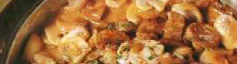

Geschnetzeltes kalb à la stroganoff
5 von 6zwiebeln und champignons in butter andünsten. mit weisswein und gemüsebouillon ablöschen.
einkochen, rahm und gürkli dazugeben, würzen. kalbfleisch separat sehr heiss anbraten und
sofort in die sauce geben, kurz aufkochen.
